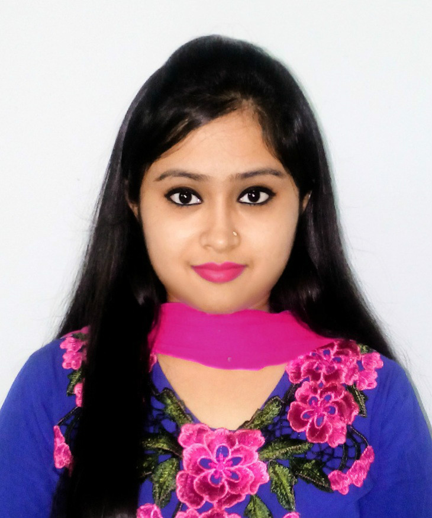

CV

Promita Ganguly
Personal Information
West Rayer Bazar, East Dhanmondi-15,Dhaka-1209
Contact:promita.eee@gmail.com
Career Objective
Seeking a challenging position in an esteemed organisation where I can utilize my knowledge
to gain valuable skills while enhancing the productivity of the company.
Education
- MBA (Ongoing), 2019,ULAB
- Bsc in EEE,2016,UIU
- HSC in science,2011, Shidheswari Girls High College
- SSC in science,2009, Willes Little Flower School
Experience
Computer Skills
- Cadence Virtuoso,MATLAB,Multisim,Proteus,
AutoCAD,Cisco Packet Tracer,Microsoft Office,
Power Point,Excel etc.
Project Profile
Medium complexity Standard Cell Design using Cadence Virtuoso for ASIC
- >Inverter
- >AND gate
- >Static and Dynamic Decoder
- >layouts
- >GDS2,DRC,LVS,RCX checking of Inverter,AND gate,and
Decoder
- >32-bit Full Adder running at 500MHz from RTL to GDSII using RTL Compiler and Encounter tools from Cadence
- >Schematic design of Telescopic OPAMP using Cadence Virtuoso
- >Deduction of Current–Voltage Characteristics for CdS/CZTS Solar Cell using MATLAB
- >Design of an oscilloscope using DOT Matrix by Proteus
- >Design of an oscilloscope using DOT Matrix by Proteus
- >Sonar application using MATLAB
- >Civil layout and related layouts using AutoCAD Tools- o Switch board, Light, Fan, Socket, PDB connection etc.
Language
- Fluent in Bangla,English.
Special Interest